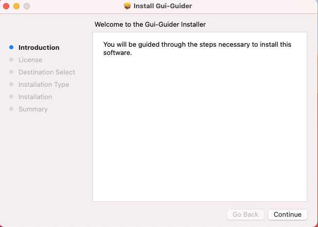

wget https://github.com/libsdl-org/SDL/releases/download/release-2.26.5/SDL2-2.26.5.tar.gz
tar -zvxf SDL2-2.26.5.tar.gz
cd SDL2-2.26.5
./configure --prefix=/usr/local
sudo make -j && sudo make install
brew install cmake command./usr/local.